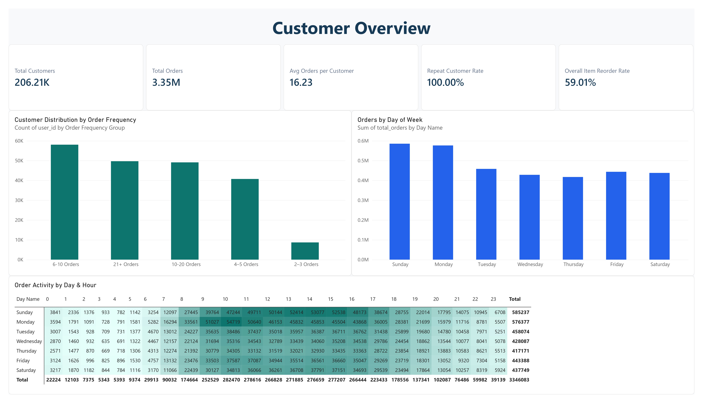
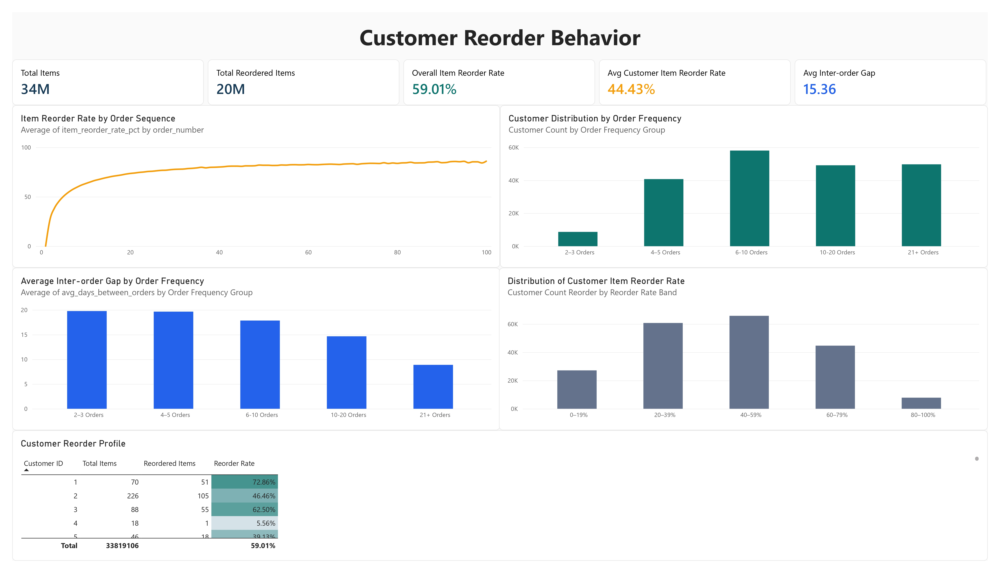
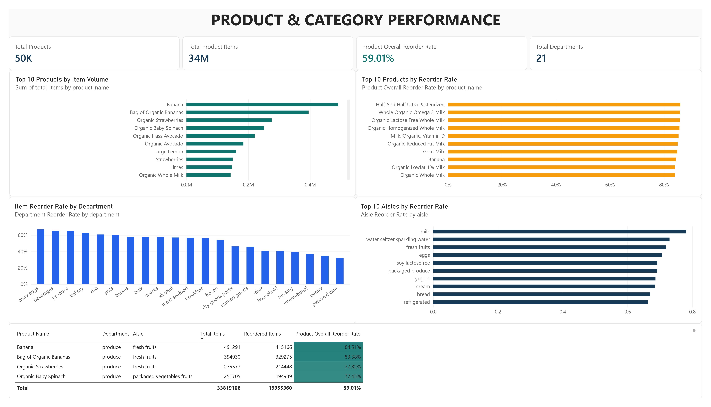

Large-scale e-commerce analytics using more than 33 million order-item records to study customer behavior, ordering patterns, repeat purchasing, and product performance.
An end-to-end Data Analyst workflow covering data profiling, relational validation, customer analytics, large-scale Python processing, and Power BI reporting.
Raw Kaggle CSVs
↓
Data Profiling
↓
MySQL Staging + Validation
↓
Customer & Timing Analytical Marts
↓
Python Chunked Large-Scale Processing
↓
Product / Department / Aisle / Sequence Marts
↓
Power BI
↓
GitHub PagesThe Power BI dashboard is presented as static portfolio previews so the analysis can be reviewed without a live Power BI embed.
Customer population, order frequency, and order timing.

Open full-size image →Overall item reorder rate, customer-level reorder behavior, order sequence, and inter-order gaps.

Open full-size image →Product volume, product reorder rates, department performance, and aisle performance.

Open full-size image →| Metric | Value | Definition |
|---|---|---|
| Customers | 206,209 | Unique customers in prior + train orders |
| Orders | 3,346,083 | Analyzed prior + train orders |
| Items | 33,819,106 | Total order-product records analyzed |
| Item Reorder Rate | 59.01% | Reordered items ÷ total items |
| Products | 49,688 | Unique products in the source dataset |
The source dataset does not contain transaction revenue, price, margin, or demographic attributes, so the analysis focuses on behavioral and product analytics.
Raw source files are excluded from version control. Compact analytical marts are used for Power BI so the dashboard remains portable.